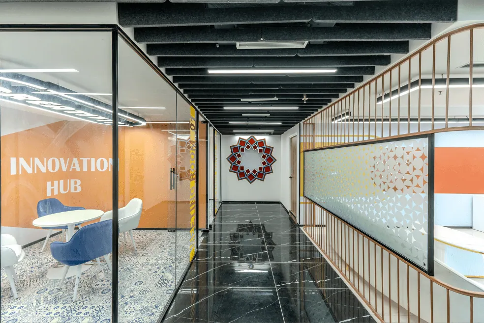
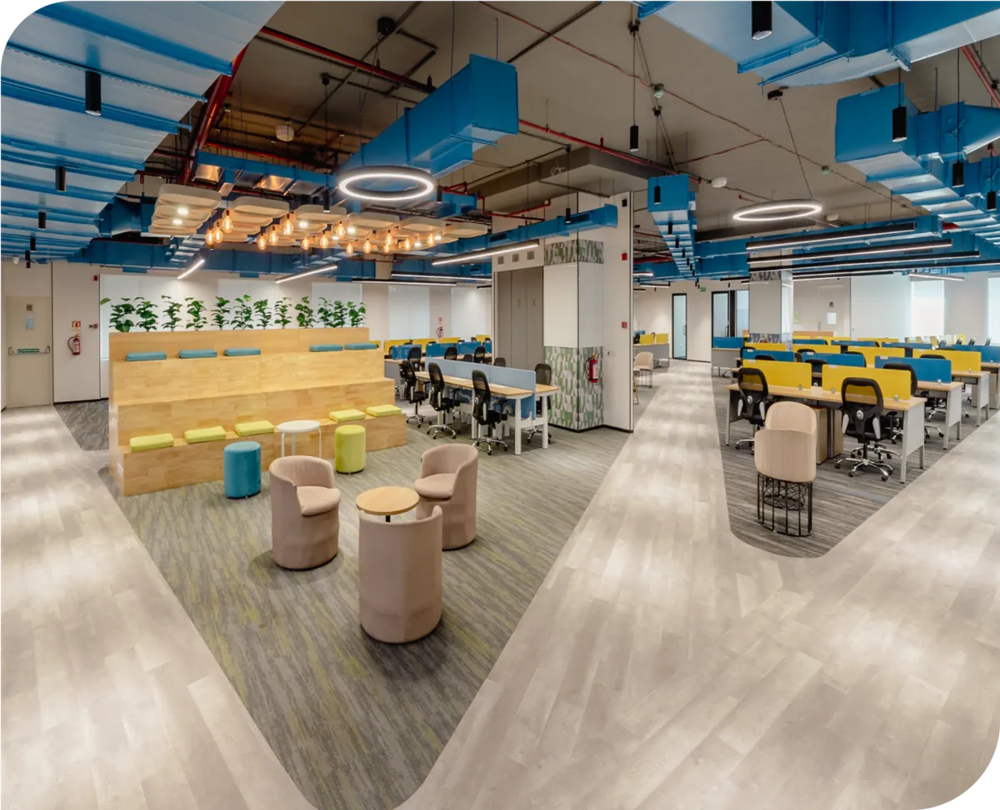

Sustainability without hype: what BW Businessworld found inside FocusOn’s projects
A green wall in Haridwar installed for air quality, an L&T Finance cafeteria moved onto a balcony, recycled PET acoustic panels and low-VOC paints — the practical choices behind FocusOn’s delivery.

In November 2025, BW Businessworld published a long look at India’s fit-out industry — “Beyond Aesthetics: How India’s Fit-Out Industry Is Quietly Redesigning Work Itself”. FocusOn Interiors was one of the firms it examined. The section I was proudest to read was headed “Sustainability Without Hype”, because it described choices our teams made on site, not slogans.
What the article found
Sustainability at FocusOn is not treated as a marketing term. It is built through simple, honest choices.— BW Businessworld, 11 November 2025
Three examples were cited:
- Luminous, Haridwar — a green wall installed to improve air quality, “not as a design feature”.
- L&T Financial Services — the cafeteria moved to an open balcony so employees could work and eat in natural light and fresh air, reducing dependence on artificial cooling.
- Regent Lighting, Noida — desks aligned to face natural views and morning light, reducing energy usage and improving focus.

Materials and methods
The piece also listed what our projects use as a matter of course: recycled PET acoustic panels, low-VOC paints, energy-efficient lighting, and design planning based on natural daylight and ventilation. As the author put it, “There is no attempt to label every office ‘green’. The focus is on whether it functions responsibly from the start.”
Technology that solves, not showcases
One more paragraph is worth quoting because it explains how the operations side works. Inside the studio, work flows through a single ERP that connects design, procurement, finance and on-site teams. AutoCAD, Revit, SketchUp, 3ds Max and BIM are used “to avoid errors and delays rather than to create dramatic visual effects”. The next step the article flagged — integrating energy simulation, IGBC and LEED tools at the planning stage — is on our roadmap.
Why this matters to a delivery-led firm
Every one of those decisions was cheaper to get right at the drawing stage than to retrofit later. That is the real link between sustainability and execution: both reward teams that think early and measure honestly. The article closed with a McKinsey line — companies combining human-centric design with operational technology see up to 30% higher productivity and 20% lower long-term costs — and with B.V. Doshi’s reminder that architecture belongs to its users. Both are good briefs for the work ahead.